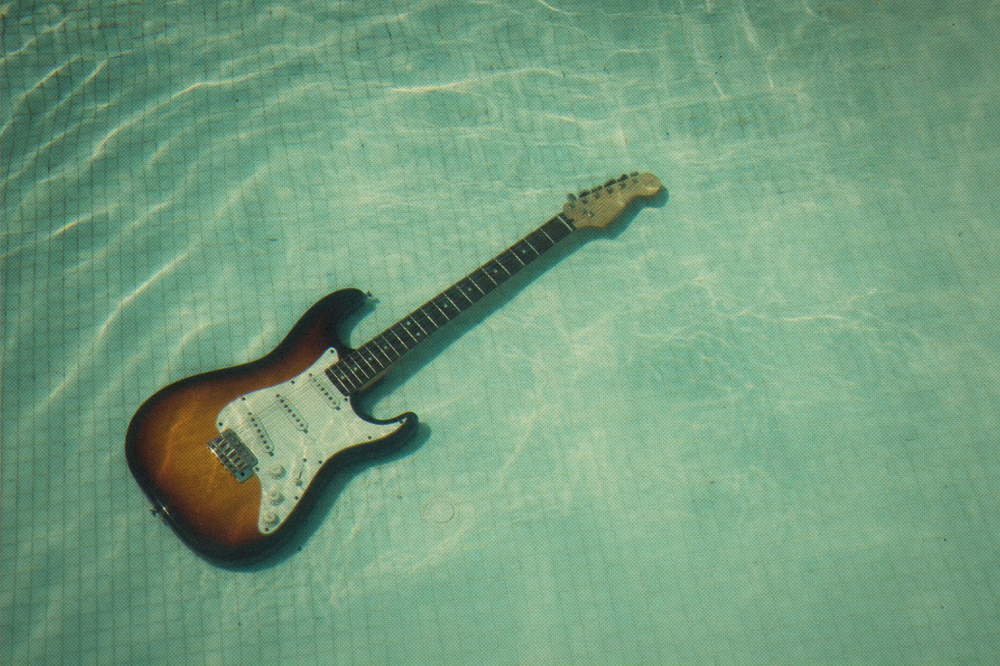

Your guitar, underwater. Your amplifier, perfectly dry.

In 1974 a small company in New Jersey put two phasers, two sweep generators and a light bulb inside one box. Then the dub engineers of Kingston got hold of it, and records never sounded quite the same.
Mutante models the Mu-Tron Bi-Phase component by component from the original schematics. That means every coupling capacitor, every diode knee and every photocell, slowly following the light.
The schematics and the bench measurements are published in the repository.

Two phasers, three routings, one light bulb.
Mutante
Dual optical phaser after the Mu-Tron Bi-Phase.
Open source · AU · VST3 · CLAP
Jardim SonoroOpen-source audio research
Download: jardimsonoro.com/audioSource & issues: github.com/nagualcode/mutante
Effects08